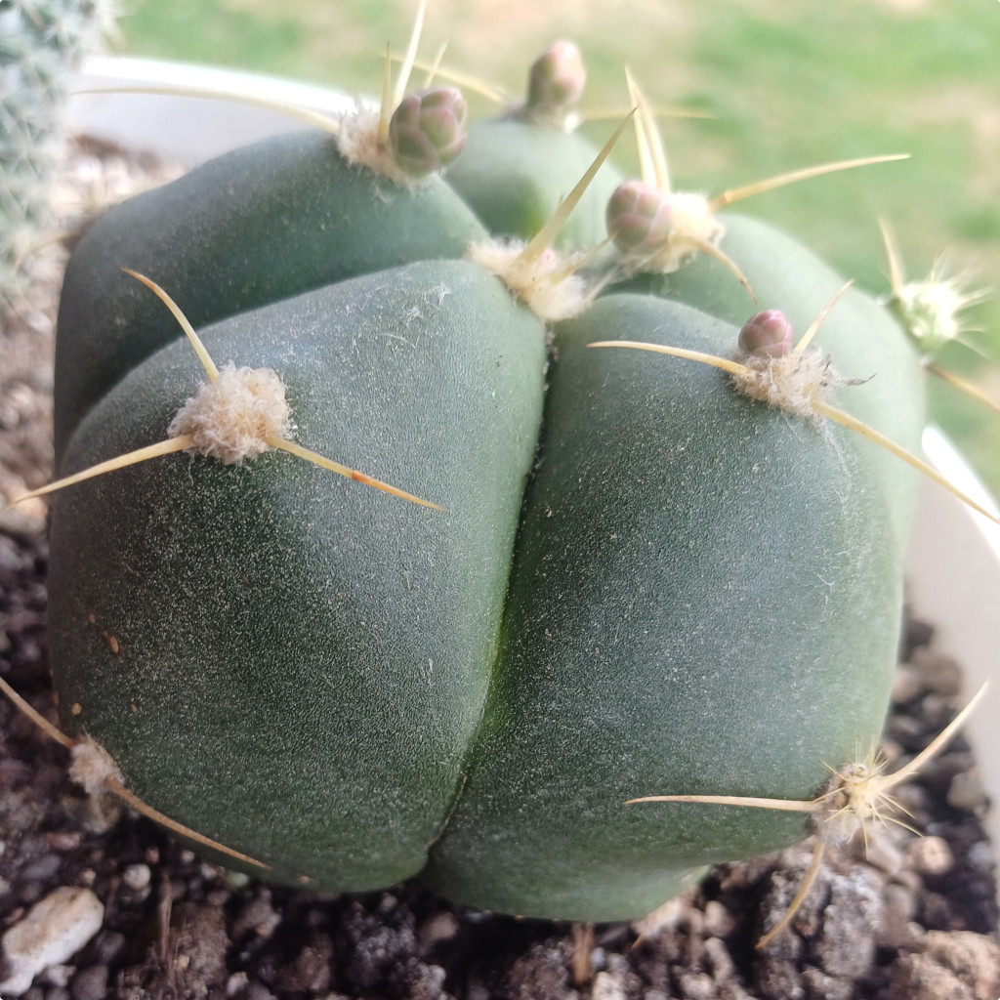
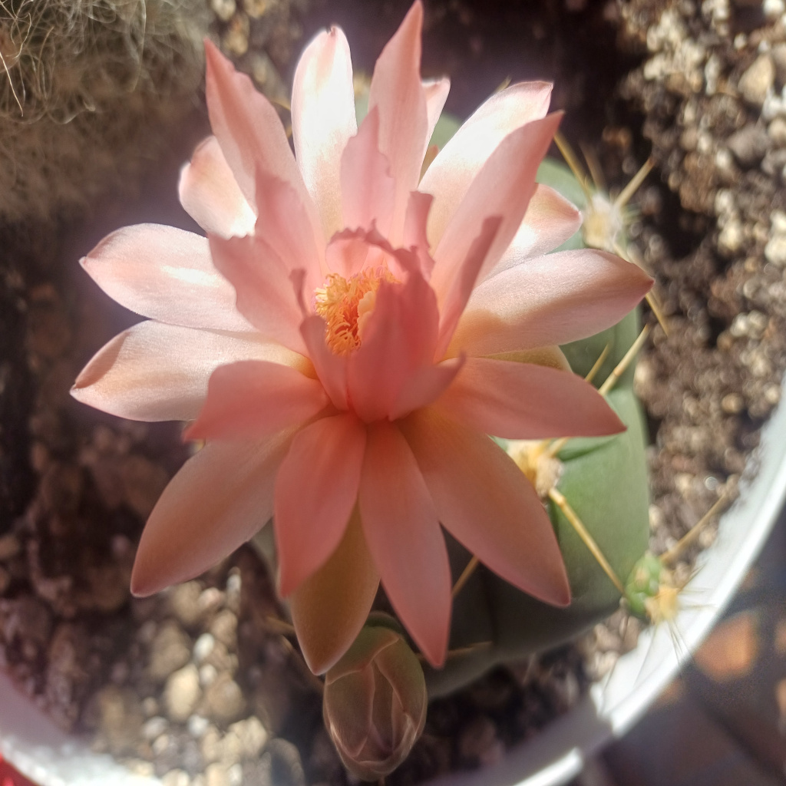
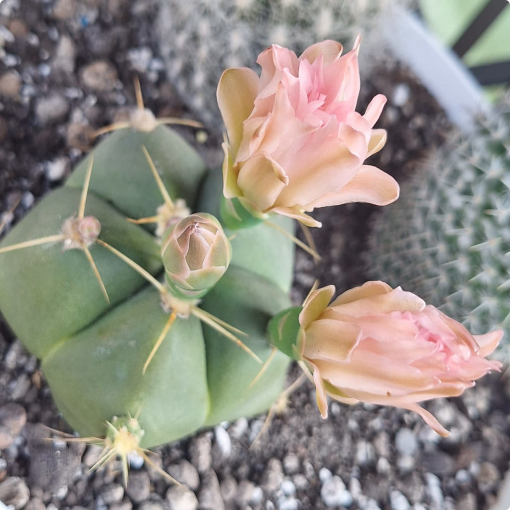

Nazwa zwyczajowa: brak ustalonej, czasem „kaktus chlebowy”
Rodzina: Cactaceae
🌍 Występowanie
Naturalnie występuje w południowej Brazylii, głównie w stanie Rio Grande do Sul. Rośnie na skalistych wzgórzach i trawiastych terenach pampy, do wysokości ok. 300 m n.p.m.
🌱 Opis morfologiczny
- Kształt: kulisty, błyszczący, przypominający bochenek chleba
- Średnica: do 20–25 cm
- Żebra: 5–6, szerokie, zaokrąglone, głęboko bruzdowane
- Kolce: zazwyczaj 5, bladożółte, do 3 cm długości, jeden skierowany w dół
- Korzeń: palowy, dobrze rozwinięty
🌸 Kwiaty
- Bardzo duże, do 11 cm długości i średnicy
- Kolory: białe, różowe, liliowe, z ciemnym prążkiem
- Kwitnienie: lato
🍒 Owoce i rozmnażanie
- Owoce: jajowate, błyszczące, zielone lub niebieskozielone
- Rozmnażanie: przez nasiona lub odrosty (pojawiają się później)
🌞 Wymagania uprawowe
- Światło: lekkie zacienienie, unikać ostrego słońca
- Temperatura: do –4°C zimą, jeśli sucho
- Podlewanie: latem obfite, zimą ograniczone
- Gleba: przepuszczalna, lekko kwaśna
- Nawożenie: latem nawozem z wysoką zawartością potasu
🏆 Ciekawostki
Gatunek uznawany za łatwy w uprawie. Często mylony z Gymnocalycium buenekeri, z którym dzieli wiele cech morfologicznych. Uważany za zagrożony w środowisku naturalnym ze względu na nielegalne pozyskiwanie roślin.
📷 Zdjęcia z prywatnej kolekcji
Prezentowane poniżej fotografie pochodzą z prywatnych zbiorów...


